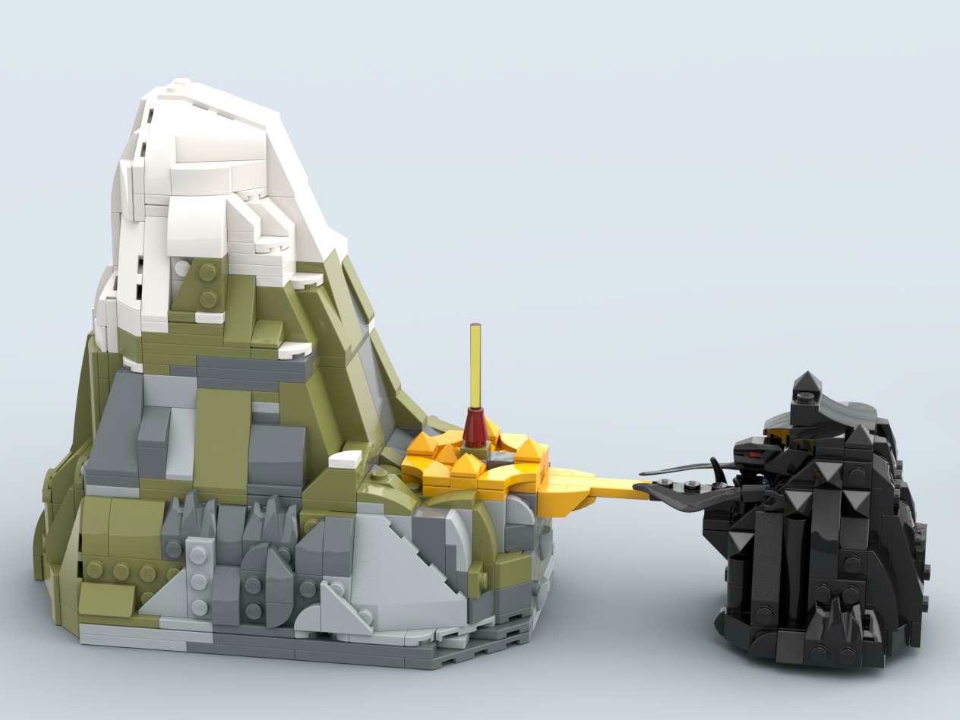
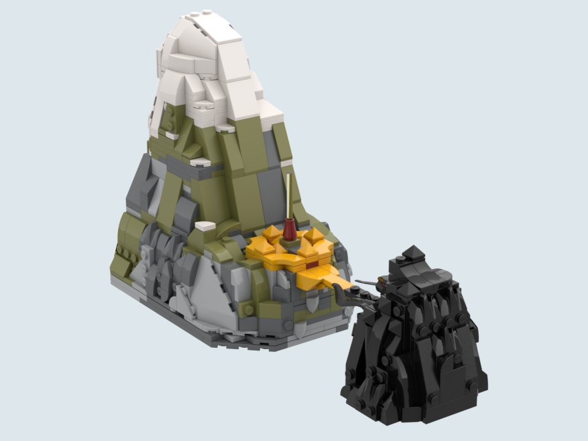
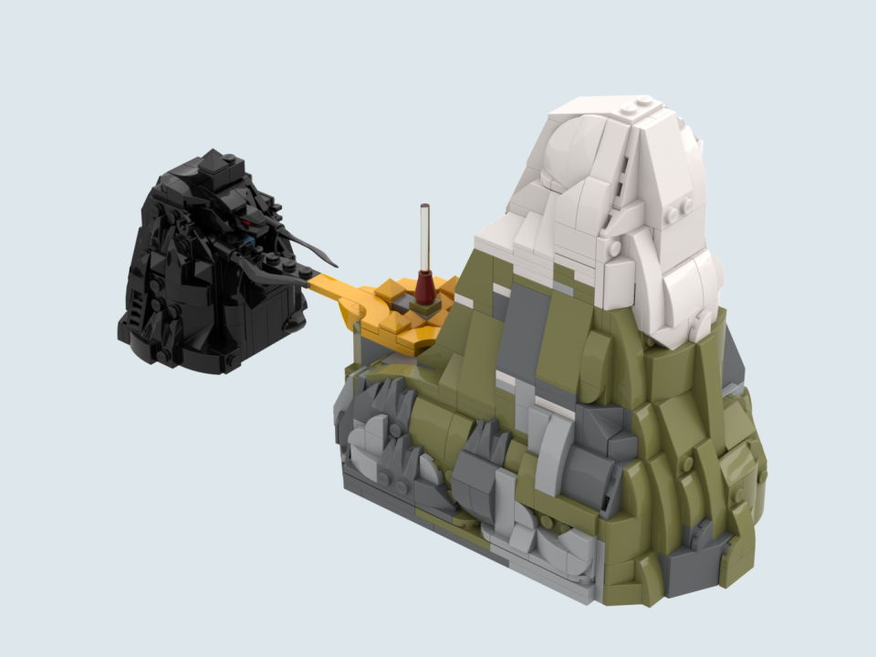
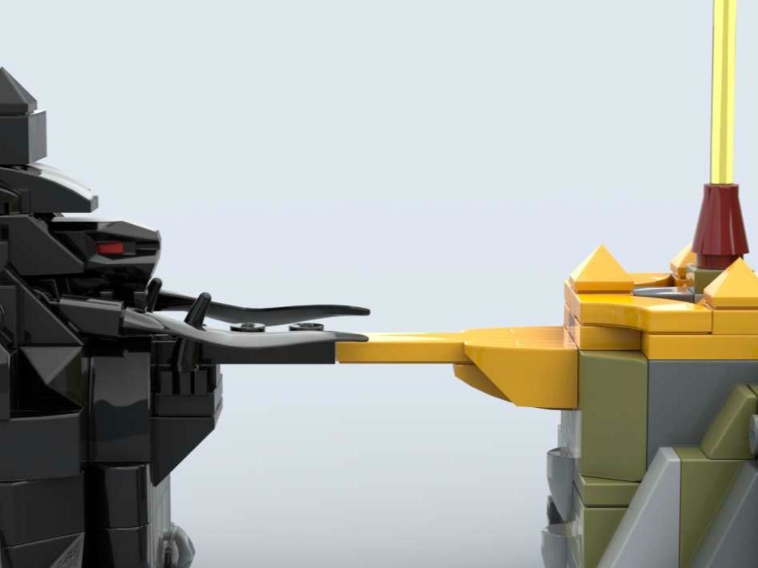

Pieces: 773 (Current), ~4000 (Projected Final Amount)
Current Dimensions (L⋅W⋅H): 9.9cm x 27.0cm x 15.5cm
Projected Dimensions (L⋅W⋅H): ~20cm x ~40cm x ~50cm
Additional Links: Flickr Post
One of my favourite sources of inspiration from my childhood is the unique world of Exo-Force. A set I always wished had been made was a full recreation of the setting of the original storyline: Sentai Mountain; A once great mountain split in half with humans on one side and robots on the other. The bridges across serving as the grounds of a great war, and a long lost golden temple at the peak being the last hope of the humans. This build is still a work in progress—I do eventually hope to complete the entire mountain...
↢


